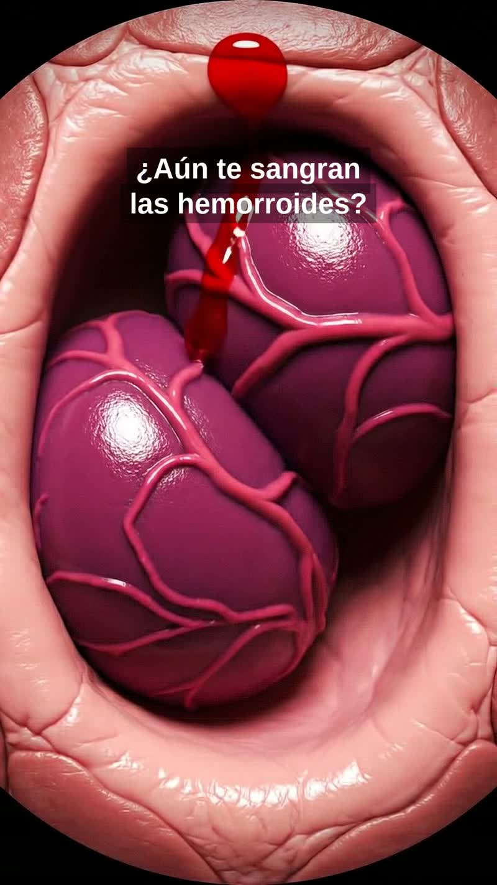
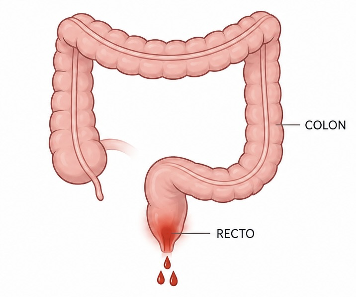

Esclerosis hemorroidal con microespuma: tratamiento paso a paso sin cirugía
Cómo tratamos las hemorroides internas con esclerosis de microespuma, paso a paso: técnica ambulatoria sin cirugía, sin ingreso y con recuperación inmediata.

Pólipo anal: síntomas, tipos y cuándo extirparlo
¿Es peligroso un pólipo anal? ¿Cómo diferenciarlo de una hemorroide? Guía completa sobre tipos, síntomas y cuándo es necesario extirparlo.

Sangrado rectal: causas frecuentes y cuándo acudir al especialista
Ver sangre al defecar asusta, y con razón. Pero no siempre significa lo mismo. Te explicamos las causas más frecuentes, cómo distinguirlas y cuándo consultar sin esperar.
Leer artículo
¿Cómo saber si tengo hemorroides? Síntomas y cuándo consultar
El sangrado al defecar, el picor anal o la sensación de bulto son los síntomas más frecuentes. Te explicamos cómo reconocer las hemorroides y cuándo consultar a un especialista.
Leer artículo
Fisura anal: por qué duele tanto y cómo se trata sin cirugía
La fisura anal crónica provoca un dolor intenso después de defecar que puede durar horas. Descubre por qué ocurre y cómo la toxina botulínica puede resolverla sin operación.
Leer artículo
Sinus pilonidal: qué es, síntomas y la alternativa a la cirugía abierta
El quiste pilonidal afecta sobre todo a personas jóvenes. La técnica GIPS permite resolverlo con incisiones mínimas y volver al trabajo en menos de una semana.
Leer artículo
¿Cuándo es necesario operar las hemorroides?
La mayoría de las hemorroides se pueden tratar sin cirugía. Te explicamos en qué casos está indicada la operación y cuáles son las alternativas mínimamente invasivas.
Leer artículo